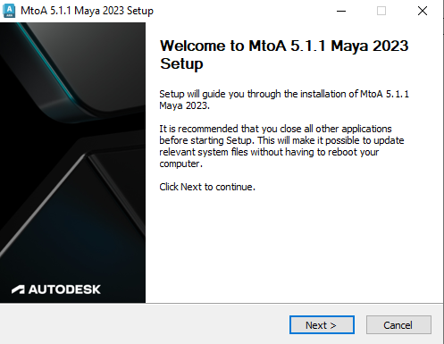
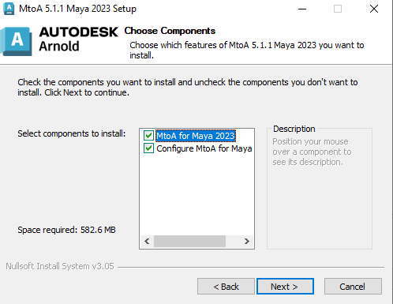
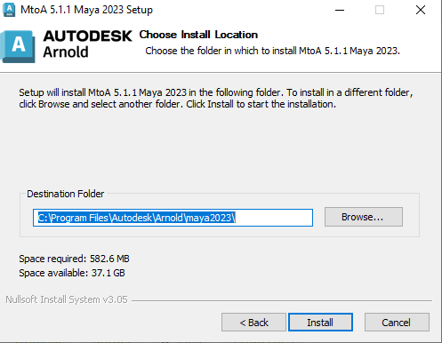
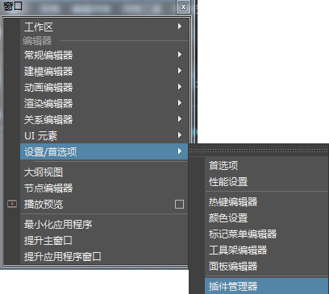
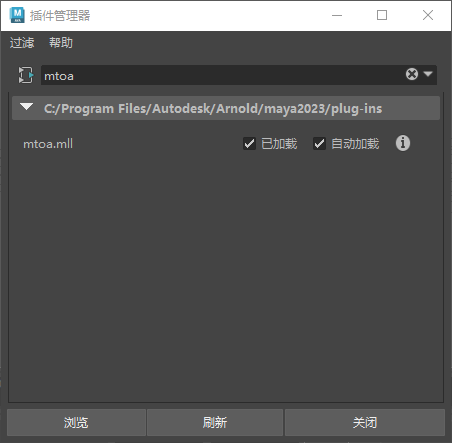

默认情况下，Arnold for Maya (MtoA) 安装程序会为 MtoA 模块文件 (mtoa.mod) 设置必要的环境变量，并为批渲染创建 Arnold 渲染器描述文件。我们建议大多数用户采用此方式安装 MtoA。希望执行网络安装的专家用户请参见手动安装部分。
如果已安装的旧版本 MtoA 使用 Maya.env 设置环境变量，请确保先从 Maya.env 文件中移除这些环境变量，然后再安装最新的 MtoA。



选择 MtoA 将出现在“开始”菜单的哪个文件夹中。
单击“完成”以关闭“设置”向导。
启动 Maya，并单击“窗口 > 设置/首选项 > 插件管理器”(Window > Settings/Preferences > Plug-in Manager)。


这时应该可以使用 Arnold 进行渲染。
如果愿意，您可以将 MtoA 提取到临时文件夹，然后将 MtoA 软件包复制到安装位置。在希望通过网络安装 Arnold 等情况下，这种方法可能会很有用。
要执行此操作，请在运行 MtoA 安装程序时，清除“为 Maya 配置 MtoA”(Configure MtoA for Maya)复选框。以下说明假定您使用的是 Windows 和 Maya 2023，而且您将 MtoA 复制到网络文件夹 \server\arnold\mtoa\2023。
接下来，完成以下步骤：
将 MtoA 提取到临时位置时，请清除“为 Maya 配置 MtoA”(Configure MtoA for Maya)复选框。
将 MtoA 软件包复制到安装位置（例如 \\server\arnold\mtoa\2023）。
首先，编辑位于 MtoA 安装位置的 mtoa.mod 文件，并更新第一行的路径，使它与实际安装位置一致。例如：
+ mtoa any \\server\arnold\mtoa\2023
PATH +:= bin 设置环境变量 MAYA_MODULE_PATH，使其指向 mtoa.mod 文件的位置（例如 \server\arnold\mtoa\2023）。
设置环境变量 MAYA_RENDER_DESC_PATH，使其指向 arnoldRenderer.xml 文件的位置（默认为 \server\arnold\mtoa\2023）。如果要使用 Arnold 执行批渲染，此步骤是必需的。
现在，运行 Maya。您应该看到“Arnold 渲染器”(Arnold Renderer)在“渲染 > 使用以下渲染器渲染”(Render > Render Using)菜单下列出。如果未列出该渲染器，请转到“窗口 > 设置/首选项 > 插件管理器”(Window > Settings/Preferences > Plug-in Manager)。
如果之前使用安装程序安装了先前版本的 MtoA，则安装程序会检测到此状况，并指出必须先卸载旧版本后才能安装新版本。如果安装程序在指定位置找到旧版本，则会自动运行卸载程序。或者，也可以执行以下操作：